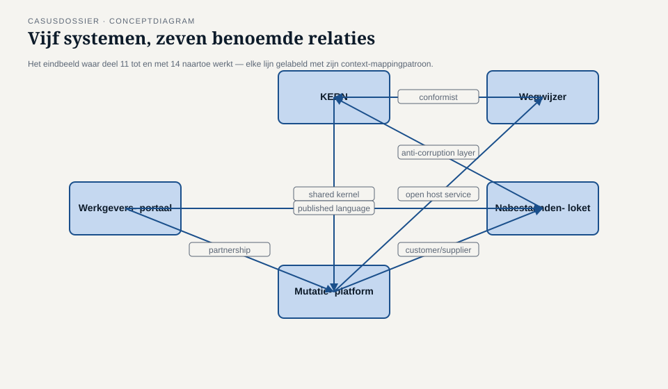

Casusdossier niveau 2 — Het Meridiaan-landschap, Programma Mutatieplatform
Ductus-cursus Domain-Driven Design · niveau 2 (professional) · behorend bij deel 11 t/m 22
Dit dossier hoort bij niveau 2 van de cursus Domain-Driven Design. Het is zelfstandig leesbaar: kennis van niveau 1 is nuttig maar niet vereist om ermee te werken. Waar niveau 1 wordt aangehaald, gebeurt dat met voldoende context om ook zonder dat niveau te kunnen volgen.
1. Waar we staan
Het Nabestaandenloket is opgeleverd. Het model dat in niveau 1 werd doordacht — taal, subdomeinen, de negen tactische bouwstenen, één grens ten opzichte van de rest van het landschap — is gebouwd, getest en sinds een klein jaar in productie. Het aantal telefonische navragen over de status van een dossier is met meer dan een derde gedaald; Compliance en Klachten noemt het “het eerste systeem in jaren waarbij een klacht zich laat reconstrueren zonder giswerk.”
Dat succes valt samen met een andere ontwikkeling die niets met het Nabestaandenloket te maken heeft, maar er wel de aanleiding voor is dat dit niveau bestaat: de Wet toekomst pensioenen (Wtp) dwingt Meridiaan tot een volledige stelselovergang vóór 1 januari 2028. Elke bestaande regeling moet worden “ingevaren” in het nieuwe stelsel, en dat vereist dat mutaties — indiensttreding, uitdiensttreding, salariswijziging, deeltijdwijziging, scheiding, overlijden — foutloos en traceerbaar door het hele applicatielandschap stromen. Het MT geeft daarom groen licht voor een programma dat groter is dan alles wat Meridiaan sinds WGP 2.0 heeft aangedurfd: het Programma Mutatieplatform.
Waar de herstart van het Nabestaandenloket één systeem, één team en één afgebakend proces betrof, raakt het Programma Mutatieplatform het complete applicatielandschap van Meridiaan. En dat landschap, zo blijkt al in de eerste programmaweek, heeft nooit iemand in kaart gebracht.
2. Het landschap: vijf applicaties
Meridiaan Pensioen draait op vijf systemen die, elk voor zich, ooit met een duidelijk doel zijn gebouwd, maar die nooit gezamenlijk zijn beschreven in termen van waar het ene systeem eindigt en het andere begint.
2.1 KERN
Het kernsysteem — de polisadministratie waar in het Nabestaandenloket-dossier al naar werd verwezen. Gebouwd medio jaren negentig, sindsdien doorlopend uitgebreid. Bevat de authentieke registratie van deelnemers, dienstverbanden, aanspraken en uitkeringen. Vrijwel elke mutatie raakt KERN op enig moment. Het team rond KERN bestaat grotendeels uit mensen die het systeem al tien jaar of langer onderhouden; zij kennen elke uitzondering, maar niemand van hen heeft het geheel ooit expliciet gemodelleerd — de kennis zit in code en in hoofden, niet in een gedeeld domeinmodel.
2.2 Werkgeversportaal
Het portaal waarlangs de ongeveer 4.800 aangesloten werkgevers mutaties van hun werknemers doorgeven: in- en uitdiensttreding, salariswijzigingen, deeltijdwijzigingen. Dit is het systeem van WGP 2.0 — het mislukte moderniseringsprogramma waarmee niveau 1 opende. Na de stopzetting draait het portaal nog altijd op de oorspronkelijke, oudere versie, aangevuld met het lichtgewicht correctiekanaal dat losstaand van het eigenlijke portaal is bijgebouwd om de ergste pijn te verzachten. Het portaal is dus, meer dan de andere vier systemen, een litteken: iedereen bij Meridiaan kent het verhaal, en niemand wil het overdoen.
2.3 Mutatieplatform
Het systeem waar dit niveau formeel om draait, en dat nog grotendeels moet worden gebouwd. Het Mutatieplatform is bedoeld als het nieuwe, centrale knooppunt waar mutaties uit het Werkgeversportaal, uit KERN en uit andere bronnen samenkomen, worden gevalideerd en worden doorgezet naar de systemen die ze nodig hebben. Het bestaat op dit moment vooral als ambitie, een paar eerste bouwstenen en een groeiend besef dat het niet gebouwd kan worden zonder eerst te begrijpen hoe de andere vier systemen zich tot elkaar verhouden.
2.4 Nabestaandenloket
Het systeem uit niveau 1, nu in productie. Klein, recent, en — uniek onder de vijf — het enige systeem waarvan het domeinmodel expliciet en met domeinexperts is opgebouwd. Het Nabestaandenloket ontvangt overlijdensmeldingen en signalen (onder andere uit KERN) en stelt zelfstandig recht op partner- en wezenpensioen vast. Precies om die reden is het een informatieve uitzondering in het landschap: het laat zien wat er gebeurt als je een grens wél bewust trekt, in een landschap waar dat verder nergens is gebeurd.
2.5 Wegwijzer
Het deelnemersportaal waarmee actieve en gepensioneerde deelnemers hun eigen pensioensituatie kunnen inzien: opgebouwde aanspraken, prognoses, en — sinds kort — een overzicht van lopende mutaties. Wegwijzer raadpleegt daarvoor gegevens uit KERN en, waar relevant, uit het Nabestaandenloket, maar heeft geen eigen autoriteit over enig gegeven: het toont, het berekent niet zelf. Het team achter Wegwijzer is klein en relatief nieuw bij Meridiaan, en heeft tot nu toe gewoon overgenomen wat KERN aanlevert, in het formaat waarin KERN het aanlevert.

3. Het Programma Mutatieplatform: de aanleiding voor een context map
Het programma krijgt, twee maanden na de start, zijn eerste crisis — niet extern, niet vanuit de Wtp-deadline, maar vanuit het landschap zelf. Twee deelprojecten binnen het programma, elk voor zich verdedigbaar bezig, blijken tegenstrijdige aannames te hebben gedaan over wat een “dienstverband” precies is: het ene deelproject rekent een deeltijdwijziging als een nieuw dienstverband met een eigen ingangsdatum, het andere beschouwt hetzelfde dienstverband als ononderbroken doorlopend met alleen een gewijzigd percentage. Beide aannames zijn intern consistent. Ze botsen pas wanneer de twee deelprojecten data met elkaar moeten uitwisselen — en dat gebeurt pas ná twee maanden bouwwerk, wanneer terugdraaien niet meer gratis is.
De programmadirectie (met Iris Tanghe als eindverantwoordelijke programmamanager) stelt vast dat dit geen incident is, maar een symptoom: niemand heeft ooit vastgelegd waar het ene systeem ophoudt en het andere begint, wie welk begrip “bezit”, en welke relatie tussen twee systemen eigenlijk hoort te gelden waar ze elkaar raken. Er komt een expliciete, aparte opdracht binnen het programma: lever, parallel aan de bouw, een context map van het complete Meridiaan-landschap. Niet als vertragende exercitie, maar als voorwaarde om de resterende achttien maanden tot de Wtp-deadline niet te herhalen wat er in de afgelopen twee maanden al één keer misging.
Voor deze opdracht wordt een klein, apart team samengesteld, met vertegenwoordiging vanuit elk van de vijf systemen. Daan Kuiper — die in niveau 1 als developer zonder domeinkennis begon en het Nabestaandenloket mee opbouwde — wordt gevraagd deze opdracht te trekken, niet als de enige die het kan, maar omdat hij, zoals Iris het formuleert, “het enige stuk landschap kent waar deze vraag ooit al eens goed is beantwoord.”
4. Personages
Daan Kuiper — hoofdpersoon. Is de domeinmodelleur binnen het Programma Mutatieplatform, verantwoordelijk voor de context map van het complete landschap. Draagt de ervaring van het Nabestaandenloket met zich mee, maar ontdekt al in de eerste week dat een grens tussen twee systemen trekken iets anders is dan een grens binnen één klein team trekken: hier moet hij vijf partijen met elk hun eigen belang, geschiedenis en trots tot een gedeeld beeld brengen, zonder de bevoegdheid om iemand iets op te leggen.
Iris Tanghe — programmamanager van het Programma Mutatieplatform, eindverantwoordelijk voor de achttien maanden tot de Wtp-deadline. Zij is het die de contextmap-opdracht formuleert na de botsing tussen de twee deelprojecten, en zij is degene aan wie Daan het resultaat uiteindelijk moet verantwoorden. Direct, resultaatgericht, weinig geduld voor werk zonder zichtbaar doel — maar ook degene die, wanneer het team in deel 20 met Conway’s Law aankomt, als eerste toegeeft dat een deel van het probleem in haar eigen programmastructuur zit.
Vera Almeida — architect van KERN, al veertien jaar bij Meridiaan. Kent elke uitzondering in het kernsysteem, is terecht beschermend over een systeem dat al drie moderniseringspogingen heeft overleefd, en is aanvankelijk wantrouwend tegenover “weer een team dat ons systeem opnieuw komt uitleggen.” Wordt gaandeweg de scherpste stem in het team wanneer het gaat over wat een shared kernel werkelijk kost.
Karsten Rooijakker — architect van het Werkgeversportaal, aangesteld ná de stopzetting van WGP 2.0 om het portaal stabiel te houden zonder het opnieuw te bouwen. Draagt zichtbaar het litteken van dat mislukte programma met zich mee: hij is de eerste die bij elke voorgestelde relatie vraagt “en wie draagt de kosten als dit misgaat?” — een vraag die het team meermaals dwingt een context-mappingpatroon niet lichtvaardig te kiezen.
Otto Feenstra — developer op het Mutatieplatform zelf, Daans directe collega binnen het te bouwen systeem. Pragmatisch, ongeduldig met abstractie die niet snel tot een beslissing leidt, en degene die het hardst aandringt op tempo — een spiegeling van Daans eigen beginhouding uit niveau 1, wat Daan zelf als eerste herkent.
Priya Chandra — productlead van Wegwijzer. Relatief nieuw bij Meridiaan, met weinig historische bagage over WGP 2.0 of de andere systemen, en daardoor vaak degene die de meest ongemakkelijke, meest terechte vraag stelt: “waarom neemt mijn team gewoon over wat KERN aanlevert, zonder dat iemand ooit heeft gevraagd of dat wel is wat wij nodig hebben?”
Foppe Sijbesma — extern ingehuurde DDD-coach, door het programma aangetrokken nadat de botsing tussen de twee deelprojecten aan het licht kwam. Begeleidt Daan en het team methodisch (EventStorming, example mapping, context mapping) zonder zelf inhoudelijke keuzes over het Meridiaan-domein te maken — dat blijft aan het team. Terugkerende zin: “Ik ken jullie domein niet. Ik ken alleen de vragen die je jezelf nog niet hebt gesteld.”
Willemijn Brugman — senior medewerker Nabestaandenzaken uit niveau 1, nu een enkele keer aangehaakt als de stem van het Nabestaandenloket wanneer het team een relatie met dat systeem bespreekt. Haar rol is klein in dit niveau, maar functioneel: zij is de levende herinnering aan wat er gebeurt als een grens wél bewust wordt getrokken.
Merel Duijvestein — business analist binnen hetzelfde Programma Mutatieplatform, bekend uit de businessanalyse-cursus, verantwoordelijk voor de samenhang tussen de vier deelprojecten uit analyseperspectief. Werkt regelmatig met Daan samen — waar Merel de behoeften en aannames van de deelprojecten ophaalt, vertaalt Daan die naar grenzen tussen systemen — maar haar eigen leerlijn wordt niet in dit dossier uitgewerkt; wie haar kant van het programma wil volgen, doet dat in de businessanalyse-cursus.
5. De opdracht: zeven relaties, zeven patronen
Context mapping levert geen score op, maar een uitspraak per relatie tussen twee bounded contexts: welk patroon beschrijft het beste hoe deze twee zich tot elkaar verhouden, en — minstens zo belangrijk — welk patroon zou hier averechts werken. Het team ontdekt dat het landschap, eenmaal goed bekeken, niet vijf losse systemen met willekeurige koppelvlakken bevat, maar een klein aantal relaties die stuk voor stuk een ander karakter hebben. Zeven daarvan worden in dit niveau met naam en toenaam behandeld — niet omdat er precies zeven relaties in het landschap bestaan, maar omdat elk van de zeven onderscheiden context-mappingpatronen hier een eigen, herkenbaar thuis krijgt:
- Werkgeversportaal ↔ Mutatieplatform — partnership. Beide worden binnen hetzelfde programma, min of meer gelijktijdig, door elkaar afhankelijke teams gebouwd. Geen van beide kan zonder afstemming met de ander vooruit; een eenzijdige beslissing van het ene team dwingt onmiddellijk werk af bij het andere. Dit is de relatie waar de botsing uit paragraaf 3 zich feitelijk afspeelde.
- KERN ↔ Mutatieplatform — shared kernel. Beide systemen moeten het, tot op zekere hoogte, eens zijn over wat een “deelnemer” en een “dienstverband” zijn — een klein, gedeeld stuk model dat allebei de teams samen onderhouden, met alle discipline en frictie die dat vraagt. Vera Almeida is de scherpste stem in het team zodra deze relatie ter sprake komt: een shared kernel is geen technische koppeling, het is een doorlopende, kostbare afspraak.
- Mutatieplatform ↔ Nabestaandenloket — customer/supplier. Het Nabestaandenloket heeft betrouwbare mutatiegegevens nodig (overlijdens, wijzigingen die de vaststelling van recht raken) en is daarmee klant van het Mutatieplatform, dat op zijn beurt de prioriteiten van zijn klanten — waaronder het Nabestaandenloket — in zijn eigen planning moet meewegen, zonder dat het Nabestaandenloket iets kan afdwingen.
- Wegwijzer ↔ KERN — conformist. Wegwijzer heeft, zo stelt Priya Chandra hardop vast, tot nu toe klakkeloos overgenomen wat KERN aanlevert, in het model en de terminologie van KERN zelf, zonder ooit te onderhandelen over een eigen vertaling. Dat is niet per definitie fout — soms is conformist de bewuste, verstandige keuze — maar het team moet expliciet vaststellen of dit hier een keuze is, of een verzuim.
- Nabestaandenloket ↔ KERN — anti-corruption layer. Hier ligt het spiegelbeeld: het Nabestaandenloket-team heeft in niveau 1 bewust een vertaallaag gebouwd tussen zijn eigen, scherp gedefinieerde model en de oudere begrippen uit KERN, juist om te voorkomen dat de gelaagde geschiedenis van KERN het nieuwe model zou vervuilen. Dit is de relatie waarin Willemijns ervaring het meest relevant terugkeert.
- Mutatieplatform ↔ Wegwijzer — open host service. Het Mutatieplatform is bedoeld om niet alleen KERN, maar meerdere afnemers te bedienen, waaronder op termijn Wegwijzer. Dat vraagt een bewust ontworpen, stabiel aanbod — een open host service — in plaats van maatwerkkoppelingen per afnemer die elke afnemer weer aan de eigen release-planning van het Mutatieplatform vastklinken.
- Werkgeversportaal ↔ Nabestaandenloket — published language. Wanneer het Werkgeversportaal een uitdiensttreding meldt die relevant is voor een lopende vaststelling in het Nabestaandenloket (bijvoorbeeld bij overlijden van een nog actieve deelnemer), moet dat gegeven een vorm hebben die niet afhangt van de interne taal van het Werkgeversportaal zelf — een gedocumenteerde, gedeelde taal waarin het feit wordt uitgedrukt, onafhankelijk van wie het uiteindelijk leest.
Deze zeven relaties vormen samen geen volledige, uitputtende kaart van het landschap — er zijn meer koppelvlakken dan deze zeven — maar wel de rode draad waarlangs niveau 2 elk patroon met een herkenbaar, uit het landschap zelf afkomstig voorbeeld introduceert, in plaats van als abstracte definitie.

6. Het narratieve verloop van niveau 2
Niveau 2 volgt het contextmap-team door de eerste helft van het Programma Mutatieplatform, ruwweg de eerste vijf maanden, met Daan als spiegel voor de deelnemer.
- Deel 11 — Het team komt voor het eerst compleet bijeen. Vijf systemen, vijf perspectieven, en nog geen gedeeld beeld van waar de grenzen liggen. Het team maakt een eerste, ruwe landschapskaart en formuleert kandidaat-bounded-contexts.
- Deel 12 — Met vijf kandidaat-contexts op tafel moet het team kiezen waar de meeste investering naartoe moet: welk deel van het landschap is kerndomein, welk deel ondersteunend, welk deel generiek.
- Deel 13 — Het team behandelt de eerste drie context-mappingpatronen (partnership, shared kernel, customer/supplier) aan de hand van de relaties Werkgeversportaal-Mutatieplatform, KERN-Mutatieplatform en Mutatieplatform-Nabestaandenloket.
- Deel 14 — Het team behandelt de resterende vier patronen (conformist, anti-corruption layer, open host service, published language) aan de hand van Wegwijzer-KERN, Nabestaandenloket-KERN, Mutatieplatform-Wegwijzer en Werkgeversportaal-Nabestaandenloket.
- Deel 15 — Een big-picture EventStorming-sessie van twee dagdelen, met vertegenwoordigers van alle vijf systemen tegelijk aan de muur, legt het complete mutatielandschap in gebeurtenissen vast — en onthult meteen een aantal aannames die tot dan toe alleen impliciet bestonden.
- Deel 16 — Het team zoomt in op één deelproces (de deeltijdwijziging die de botsing uit paragraaf 3 veroorzaakte) met procesmodellering en domain storytelling.
- Deel 17 — Example mapping en specification by example scherpen de grens tussen Werkgeversportaal en Mutatieplatform verder aan, met concrete voorbeelden in plaats van abstracte regels.
- Deel 18 — Het team herziet de consistentiegrenzen van het Mutatieplatform nu duidelijk is dat meerdere teams tegelijk aan aangrenzende aggregates bouwen.
- Deel 19 — Een tweedaagse sessie over applicatie-architectuurpatronen (hexagonaal, gelaagd, CQRS als patroon) waarin het team, per relatie uit paragraaf 5, kiest welk patroon de gekozen context-mappingrelatie het beste ondersteunt.
- Deel 20 — Iris Tanghe erkent, geconfronteerd met Conway’s Law, dat de programmastructuur zelf een deel van de botsing uit paragraaf 3 heeft veroorzaakt — een zelfstandig leesbaar deel over bounded contexts als organisatievraagstuk.
- Deel 21 — Het team werkt uit hoe domain events, gedefinieerd met de published language uit deel 14, als integratiemiddel tussen de vijf systemen dienen.
- Deel 22 — Het team presenteert de voltooide context map aan Iris Tanghe en de programmastuurgroep, geoefend in de vorm van het strategische deel van de iSAQB-module-toets.
Aan het eind van niveau 2 is het Mutatieplatform zelf nog niet af — dat ligt buiten deze cursus, net zoals het Nabestaandenloket in niveau 1 nog niet gebouwd was aan het eind van dat niveau — maar het landschap is voor het eerst in de geschiedenis van Meridiaan expliciet in kaart gebracht: vijf systemen, hun grenzen, en de zeven patronen die vastleggen hoe die grenzen zich tot elkaar verhouden.
7. Gebruik van dit dossier
- Dit dossier wordt in deel 11 in zijn geheel uitgereikt.
- Per deel komen er kleine dossierstukken bij: notities uit programma-overleggen, koppelvlakspecificaties, fragmenten uit EventStorming-sessies. Die staan in het werkboek van het betreffende deel, niet hier.
- Gegevens in dit dossier zijn fictief maar onderling consistent, en bouwen voort op niveau 1 zonder dat niveau 1 gelezen te hoeven zijn. Latere delen mogen op dit dossier voortbouwen; docenten passen het niet stilzwijgend aan.